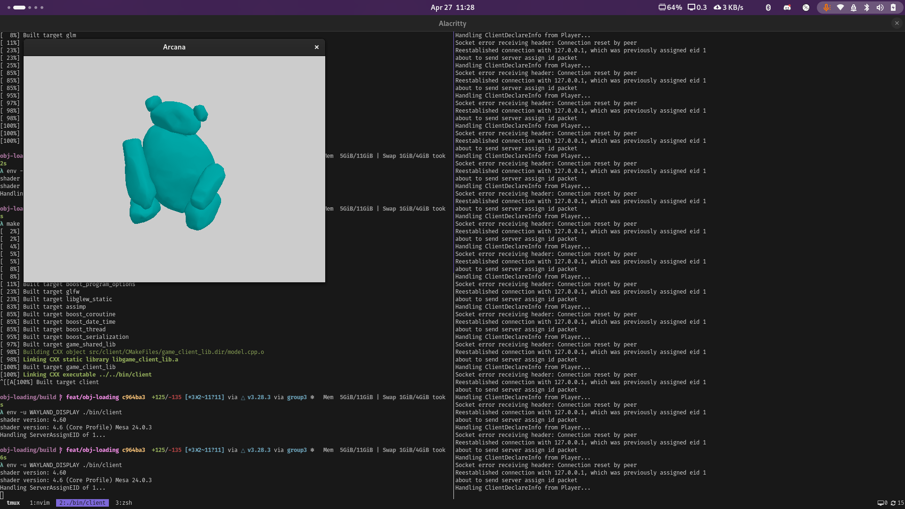

After successfully merging in all of our original branches, we have now branched back out again, and have made good parallel progress on
many different areas of the game at the same time, made posssible because of some crucial early-week planning.
This does mean that very soon we will need to merge back in all of these separate branches, but because we
are all working on mostly different sections of the codebase, and we all now have a common ancestry for our
branches, we believe this should not be more difficult than the previous mega-merge despite there being
a higher number of branches.
In addition, on Wednesday we met and moved around some of our deadlines based on our measured levels of progress.
Before, we had planned to complete our MVP by Week 5. However, with our experience now this isn't a realistic
deadline. Instead, we have created a new "Mini-Milestone 2" that we would like to get done by the end of this week,
with the MVP being moved back to week 6.
Milestone
Description
Finish By
Mini-Milestone 2
Have a room rendering / working
Multiplayer can see each other
Players walk around, render in Coco’s player model, no animations
Collision detection with floor & walls
Wait to start game until max players have joined, but dont need nice lobby UI
End of week 5
MVP
Lobby & lobby / menu interface
A single pregenerated maze layout w/ placed traps
2D movement for players with proper collision
Basic traps (arrows, lava pit, etc.)
Dungeon Master with a single action
End of week 6
Group Morale
Overall, it seems like everyone simulatenously feels that their own progress is limited,
but that they feel confident in the group's progress as a whole, which is pretty funny,
and means that we all are working hard and are a little harder on ourselves than we should be.
In addition, there is a general sentiment that we all want to work hard this coming
week to finish our "Mini-Milestone 2".
Gallery
Ted's current progress on refining our movement code, now with jumps!

Anthony's current progress on model loading. New milestone achieved: load in the Warren Bear!